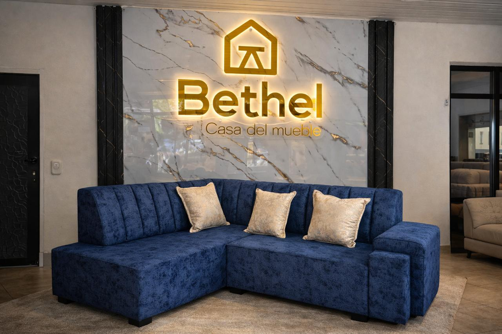
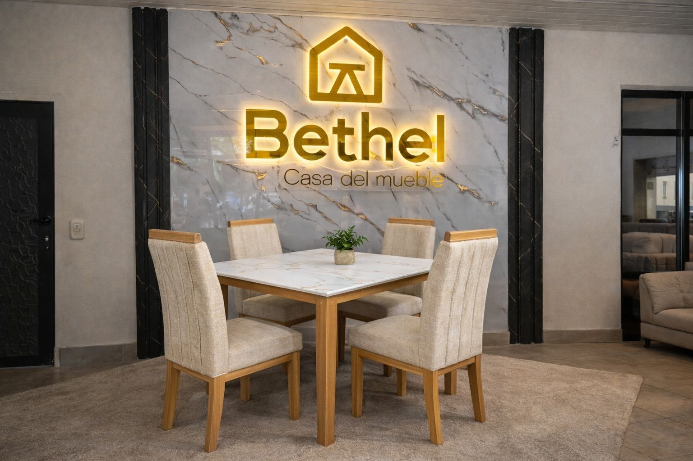
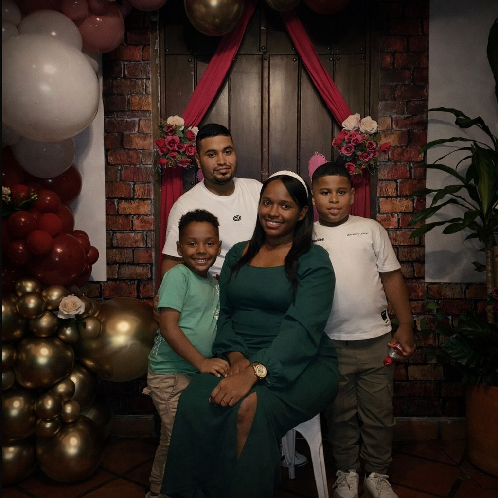

Bethel nació del sueño de una pareja que deseaba salir adelante y construir algo propio. Durante años intentaron diferentes caminos, enfrentando dificultades, incertidumbre y muchos momentos de sacrificio. Con fe, esfuerzo y la convicción de que el trabajo honesto siempre da frutos, siguieron adelante. Cada día pedían a Dios sabiduría y fortaleza para no rendirse y continuar luchando por sus sueños. Con el tiempo, ese esfuerzo comenzó a dar resultados y lo que inició como un pequeño proyecto se convirtió en un negocio que hoy sigue creciendo con dedicación y amor por el trabajo bien hecho. Actualmente Bethel cuenta con un equipo de cinco personas que cada día trabajan con compromiso para mejorar, perfeccionar cada detalle y ofrecer muebles que realmente transformen los hogares de nuestros clientes. Más que muebles, buscamos crear espacios donde las familias puedan disfrutar, descansar y construir recuerdos.
En Bethel fabricamos muebles pensados para brindar comodidad, durabilidad y elegancia a tu hogar.
Explorar mueblesEstamos ubicados en santander de quilichao, Cauca. Ven y conoce nuestro muebleria.